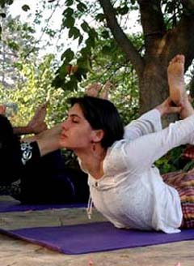

| Global Arts Village
Fellowship
A wholistic international artist residency in India.
|
Fellowship Announcement 2006
Global Arts
Village is an emerging international residential art
center in New Delhi, India, which encourages diversity and
multicultural exchange among creative people of all kinds.
The Arts Village practices community living, sharing meals
and evening activities and enables artists to experience a
natural, eco-friendly environment for creative work. The Global
Arts Village is a three-acre property that includes gardens,
a multi-purpose studio, sculpture workshop, a meditation and
performance hall, a common building, a dance studio, performance
spaces and accommodations. The buildings are in accordance
with the ancient wisdom of Vastu, which harmonizes man-made
structures with their natural environments. The Village offers
residency programs to emerging, mid-career and established
artists in all major creative disciplines. We are building
a community that blends art, culture and consciousness. Individuals
with exploratory spirits are invited to join.
Fellowships / Artist-in-Residence
The Global Arts Village offers full and partial fellowships,
several specific fellowship opportunities and an Artist-in-residence
program. All programs include accommodation (standard or duplex),
laundry service, three meals per day, studio or workspace
(shared or private), initial welcoming celebration (presentation
of past work and project plan to local artists and other fellowship
recipients), concluding exhibition opportunity and other benefits
dependent on the fellowship program and the dates of stay.
All recipients are asked to donate fellowship specific hours
of community work per week (cooking, researching, organizing,
leadership of a workshop, assisting or teaching a class, promotion,
event planning). Partners of artists are invited to stay for
US $ 15 per day. (Includes accommodation, meals and laundry).
- 45-day residencies begin on February 17, April 3, May
19, July 3, August 18, October 2, November 17 and January
1 of each year
- 90-day Residencies begin on February 17, May 19, August
18 and November 17 of each year.
|
Artist Full Fellowship (90-Day)
The fully funded residency has no program fee. Recipients contribute
US $ 9 for meals per day and a total of 7 hours of community work
per week.
Artist Partial Fellowship (90-Day)
The partially funded residency includes a reduced program fee of
US$ 20/day for standard accommodation and US$ 25/day for duplex
accommodation. Recipients contribute a total of 7 hours of community
work per week.
Emerging Artist Fellowship (under 27 yrs; 90-Day)
These fully funded 90-day residencies are offered to creative people
who have graduated from a University program. There is no program
fee. US$ 9 per day has to be contributed for meals. Recipients contribute
a total of 15 hours of community work per week.
Student Fellowships (45-Day)
Fully funded residencies are offered to students currently enrolled
in a University program. There is no program fee, we only ask that
US$ 9 per day be contributed for meals. Recipients contribute a
total of 15 hours of community work per week.
Professional Development Fellowship (45 / 90-Day)
Fully-funded fellowship opportunities are offered: curators, visual
art coordinators, grant writers, chefs/ culinary artists, performing
arts coordinator, organic farmers, organization developers. The
Fellows contribute 7 hours of communal work per week plus 15 hours
of fellowship specific work. There is no program fee. Recipients
contribute US $ 9 for meals per day.
Site Specific Sculpture Fellowship (45-Day)
This fully funded residency has no program fee. A materials allowance
of US$ 200-500 is offered dependent on the project proposal. The
artist is to donate the site-specific sculpture unconditionally
to the Village. Artists put in 7 hours of community work per week.
Recipients contribute US $ 9 for meals per day.
 |
Artist in Residence (45 / 90-Day)
The entire artist-in-residence program is subsidized. For
45 days, the program fee is US$ 35 for standard accommodation
and US$ 45 for a duplex room. For a stay of 90 days, the charges
are US$ 30/day for a standard room with shared studio / work
space and US $ 40 for a duplex room with private studio. All
artists in residence are asked to donate seven hours of community
work per week.
Studio Facilities
Our 967 square foot ceramics studio is organically shaped
and covered with a thatch roof. It is open on all sides, overseeing
the garden and ponds nearby. The studio is equipped with a
heater for the winter months and a desert cooler for the summer.
Mosquito protection is provided. The studio is open to artists
24 hours a day.
The following equipment is available:
- 5 kick wheels
- 1 electric wheel (for resident artists only)
- gas kiln (38” X 28” X 48”)
- kiln shelves (24” X 12”)
- glaze material available
- stoneware and terracotta clays (Rs 10/kg)
- basic clay tools plus drill, bench grinder, mixer, sieves
- pliers, hammers, screwdrivers
- storage space and shelves
|
|  |
Meals
Meals are eaten together, in a common dining room or, if
weather permits, outside among the gardens. We celebrate eating
and great care is taken to serve delicious, well-balanced,
nutritious foods. We are vegetarian at the Village, though
we do consume dairy products and eggs. The food is mostly
Indian, but occasionally Continental, Chinese, Italian and
Mexican meals are served. India is a country with a rich tradition
in vegetarianism, so the cuisine is extremely varied. We source
organic vegetables, pulses, grains and oils as often as possible.
Applications are accepted on a rolling basis, there is no
deadline. The application can be submitted via email or post.
|
Email: info@globalartsvillage.org;
website: http://www.globalartsvillage.org
Phone:
+91-11-55657265
+91-11-26804790
+91-11-26804805
+91-11-26808668
Fax:
+91-11-26800361
Snail mail:
Global Arts Village
Mehrauli - Gurgaon Road
Utsav Mandir, Gitorni
New Delhi, 110030,
India
More Articles |